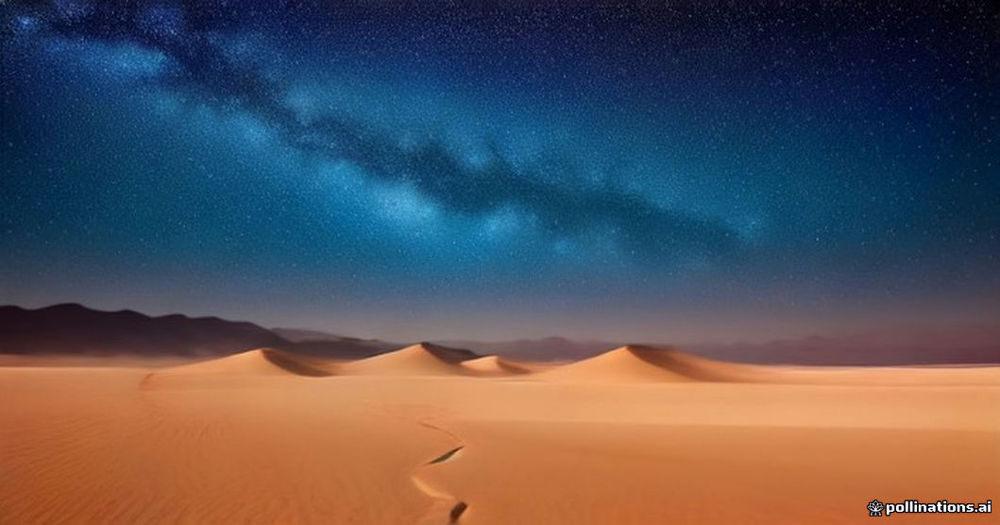

Erg Chebbi is widely promoted as an ideal dark-sky location, and while light pollution is far lower than in urban Morocco or Western Europe, capturing the Milky Way core requires deliberate planning. You are not in an absolute, unlit void. The towns of Merzouga and Hassilabied border the western dune line, and modern desert camps utilize solar-powered perimeter lighting for guest safety.
Photographing clean astrophotography shots depends more on the lunar calendar, season, and your physical position relative to camp lights than on carrying high-end camera equipment. This guide breaks down the practical steps needed to shoot the night sky without washed-out horizons or sand-damaged optics.
Seasonality and Galactic Core Visibility
The bright core of the Milky Way is not visible year-round in the northern hemisphere. In the Sahara, the galactic core season runs roughly from late March through October. Outside this window, winter skies offer clear views of Orion and surrounding constellations, but the dramatic core remains below the horizon.
Spring (April to May) brings the core high into the sky in the late night and early morning hours before dawn. Summer (June to August) positions the core overhead earlier in the evening, but requires managing high ambient nighttime heat. Autumn (September to October) offers excellent viewing right after twilight, though the core sets early in the evening.
Working Around Moon Phases and Timing
Moonlight is the single largest factor affecting sky clarity. A moon illuminated beyond 30% acts like localized light pollution, washing out faint nebulae and dust lanes. To capture crisp star detail, schedule your shoot during the New Moon phase or calculate the specific hours between moonset and moonrise.
Even during partial moon phases, you can use the timing to your advantage. A low moon rising or setting behind you can gently illuminate the red dune foreground while keeping the sky relatively dark overhead, adding texture to your composition without overexposing the horizon.
- Aim for a window of 3 days before to 3 days after the New Moon.
- Check local moonrise/moonset times for Merzouga rather than general Moroccan averages.
- Allow at least 90 minutes after sunset for true astronomical twilight to begin.
Positioning to Avoid Camp Lights and Town Glow
Most luxury and standard camps leave walkway solar lights on all night. Standing inside the camp perimeter will result in lens flare, amber sky glow, and overexposed canvas tents. To find clean darkness, you need to hike away from the camp footprint.
Walk 10 to 15 minutes into the dunes, climbing over a crest into a natural dune bowl. Higher dune ridges act as physical barriers, blocking the direct line-of-sight to camp lights and the glow from Merzouga's western hotels. For more details on overall conditions, review our guide to photographing stars in the desert.
Recommended Camera Settings and Gear Setup
A full-frame sensor helps reduce noise at high ISO settings, but a cropped-sensor camera paired with a fast wide-angle lens (f/2.8 or wider) performs exceptionally well in Erg Chebbi's dry air. Keep exposure times under the limit where star trailing begins.
Use manual focus set to infinity or focus on a bright star using magnified live view. Set your white balance manually to around 3500K to 4000K to avoid the unnatural orange tint caused by warm sand reflections.
- Aperture: Widest setting (f/1.4 to f/2.8 recommended).
- ISO: 1600 to 6400, depending on lens speed and camera noise tolerance.
- Shutter Speed: 13 to 20 seconds (apply the 500 Rule based on your focal length).
- Tripod: Sturdy alloy or carbon fiber weighted down against desert breeze.
Protecting Camera Gear from Dune Sand
Wind-driven sand dust is the primary hazard for photography in the dunes. Fine particulates easily enter lens barrels and settle on camera sensors during lens swaps. Avoid changing lenses outdoors while standing on sand ridges.
Set up your lens and tripod base inside your private tent or high-clearance 4x4 vehicle before heading out. If ambient winds pick up above 15 km/h, secure your camera in a sealable bag between shots. See our advice on managing camera gear in the desert for broader packing recommendations.
| Season | Galactic Core Window | Trade-Offs & Sky Conditions |
|---|---|---|
| April – May | 02:00 AM to Dawn | Crisp air and cool nights; potential for afternoon wind sand. |
| June – August | 22:00 PM to 03:00 AM | Core visible early; very warm nights and potential thermal sensor haze. |
| September – October | 21:00 PM to 01:00 AM | Comfortable night temperatures; core sets earlier each night. |
| November – March | Not Visible (Core Below Horizon) | Cold night skies; excellent clarity for winter stars and moonscapes. |

Illustration, not a photograph — for the real thing, you'll have to stand on the ridge yourself.
Quick answers
A few follow-up questions travelers ask about this.
Do I need a expensive full-frame camera to shoot the Milky Way in the desert?
No. A modern crop-sensor camera paired with a fast, wide-angle lens (f/2.8 or faster) and a stable tripod will produce sharp, detailed photos when shot during a New Moon.
Can I take astrophotography pictures directly from my camp deck?
It is rarely ideal. Camp pathway lighting causes lens flares and amber reflections on nearby canvas. Walking 10 to 15 minutes past the nearest dune ridge hides camp lights completely.
How do contact lenses fair during cold night shooting in the dunes?
Dry desert air and wind-borne dust make contact lenses uncomfortable during night shoots. Wearing glasses with a headlamp strap is far more reliable. Review our eye care guide for desert tours for details.
Planning your own route?
Tell us your dates and what matters to you — we'll answer with a straight recommendation, not a brochure.
Send an inquiry See the itineraries